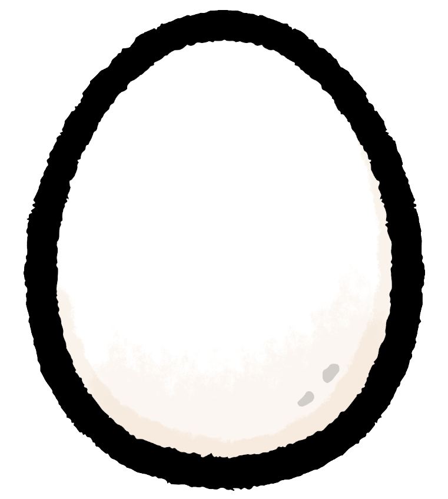
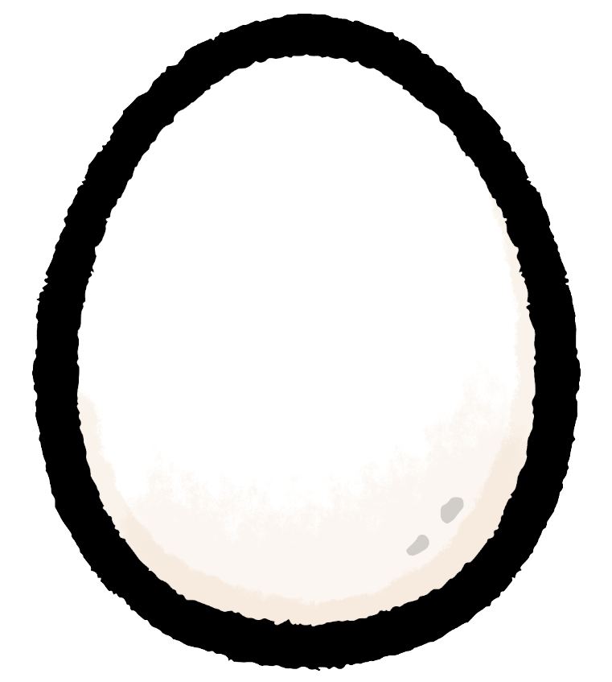
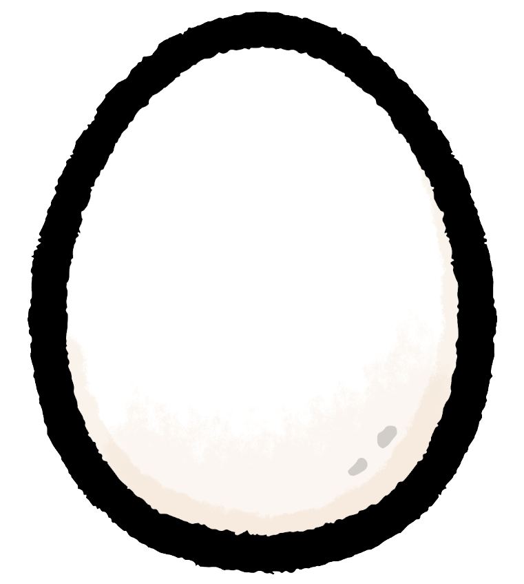

自動販売機について調べてみました。
余った土地を活用したいときなどに自動販売機を設置する。
自動販売機の事業者は、大きく分けて飲料メーカーと総合オペレーターの2つがある。
また、自動販売機の運用方式は、自分で管理するセミオペレーションタイプと
事業者が管理するフルオペレーションタイプの2つがある。
日本のペットボトル回収率やリサイクル率は高いが、
異物が混入すると、リサイクルできなくなってしまう。
リサイクルボックスの投入口を下向きにするなどの対策がされている。


 
